The premise, stated plainly
This project has already searched the obtained environmental documents for dip vat, cattle dip, sheep dip and dipping, and found nothing. That search assumed the searcher and the original recorder shared a vocabulary. They did not. In 1997 a surveyor walking ranch land who encountered a half-buried concrete trough with iron pipe rails had no reason to know what a 1911 arsenical dipping station looked like. That person still had to write something down. This report asks what they wrote.
Contents
- Part A · The lexicon, and what a vat looked like
- Part B · What is left of one
- Part C · The sweep, and what it returned
- Part D · Three findings that matter more than a keyword hit
- Part E · The figures that are not there
- Part F · The photographs that do exist, and what they show
- Part G · The missing document now has a number: EIR 555
- Part H · The report series that is required to exist
- Part I · Where a record of this feature would actually be
- Part J · What to request, from whom, in what order
- Limitations, figure provenance, and sources
What this sweep produced
- Photographs of Ladera Ranch ground during construction — sixteen of them, dated 31 January 2002 — were already in this project's evidence folder, under a filename that hid them. They belong to a Phase I Environmental Site Assessment for a school site inside Ladera Ranch. They show a finished graded pad. The site walk happened after mass grading finished, so the review of that parcel had nothing historic left to look at. Part F.
- The person who watched the earth being moved was interviewed — a geotechnical firm monitored the grading from 1999 — and the question put to him was whether fuel storage tanks and clarifiers had been encountered. Part F.
- A name and a number for the document nobody had located. The environmental review for Ladera Ranch is Final EIR 555, certified by the Orange County Board of Supervisors on 17 October 1995, with Addendum PA970174 approved 7 April 1998. Every prior search in this project had been run against EIR 589, which governs different land. Part G.
- A binding condition requiring archaeological monitoring of grading. The Ladera Planned Community Program Text requires County conditions for archaeological survey, investigation and observance of grading activities on every Area Plan and every tract map, under Board of Supervisors Resolution 77-866. Part H.
- The other Phase I has none of its own figures. All nine Planning Area reports in EIR 589 list Plate 1, Figures 1 to 3, and an Appendix E titled Site Photographs. The 218-page file contains none of them. Part E.
- What a derelict vat actually looks like, photographed by a state agency that went looking for them. Florida has published its own images: low concrete walls under scrub, a trough full of reeds, a stepped ramp, a drip-pad slab. Beside them, a 1968 Orange County photograph of a concrete stock trough on ranch land shows why the naming problem is real. Part B.
- An oil well with a number and a water well on a 1942 map, both about 700 feet south of a school site. Part F.
Part A · The lexicon, and what a vat looked like
A 26-foot concrete trough, 6.5 feet deep, with a sloped entry, a drip apron, iron pipe rails and timber corral posts, sitting derelict in brush. Seven different professionals would write seven different things.
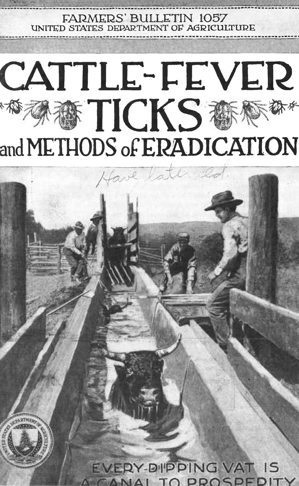
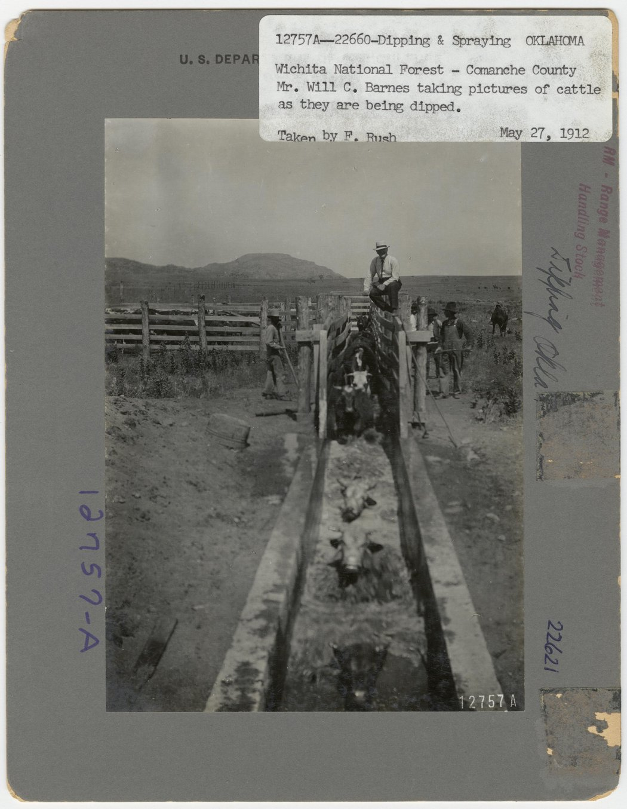
Oklahoma, not California — but May 1912 is within weeks of the end of the Orange County quarantine, and this is the federal programme that ran in both places under the same circulars. Look at the trough: narrow, straight-sided, sunk to ground level, with everything above it made of wood.
US Forest Service photograph, NARA RG 95, local identifier 95-GP-624-12757A, NAID 7007707. NARA records access and use as unrestricted.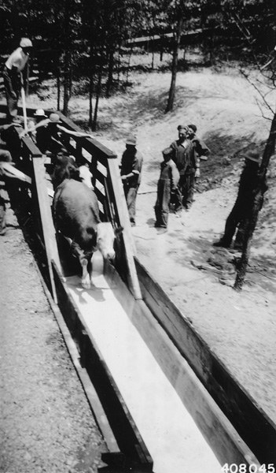
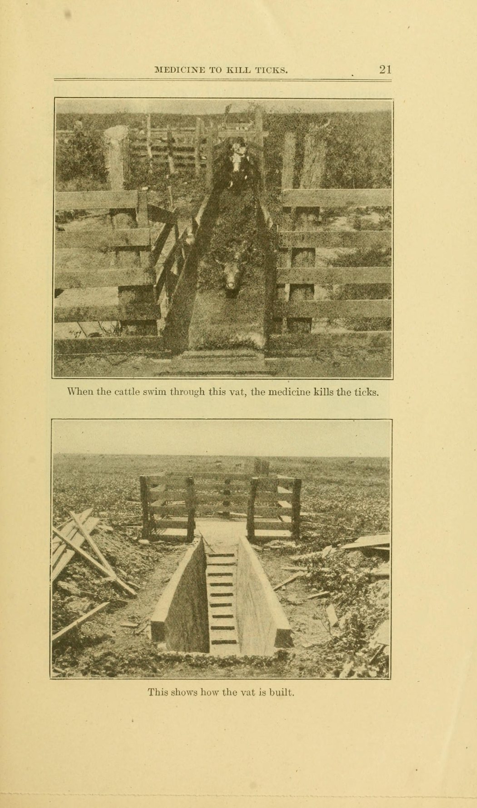
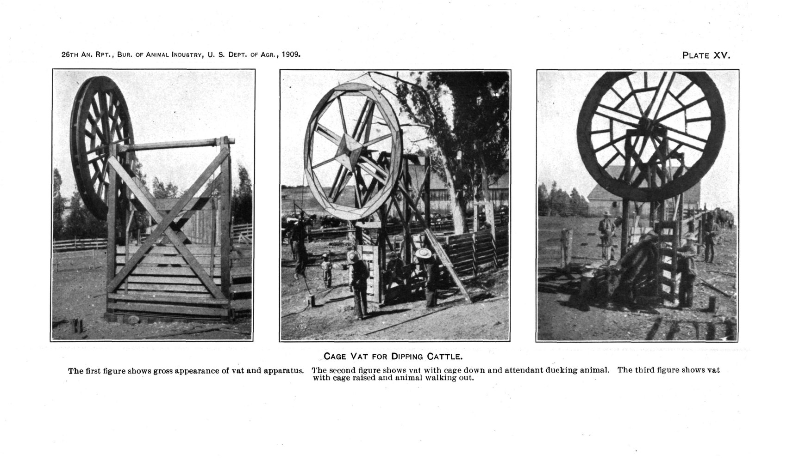

The terms most likely to be the real answer
| Term | Why a 1911 vat would be written this way | Register |
|---|---|---|
| stock watering trough / stock pond | The single most probable misidentification. It is a concrete trough, on a drainage, where cattle demonstrably gathered. A surveyor would not be wrong in outline, only in chemistry. | C |
| cistern / concrete tank | A deep, rectangular, lined concrete vessel in ground with no plumbing attached reads as water storage to anyone who has not seen a dipping plan. | B, C |
| sump | The standard word for a sunken concrete box of unknown function. Also the word a Phase I consultant is trained to flag, which makes it the most valuable term in the list. | B, F |
| historic-period feature / ranching-related feature | Precisely how a CEQA archaeologist would record it on a DPR 523 form without assigning a function. | E |
| corral remnant / loading chute | The pens, chute and squeeze are the visible part; the vat is the part in the ground between them. Recording the corral and missing the vat is the expected outcome. | D |
| concrete structure of unknown function | The honest entry. If this phrase appears anywhere on Ladera ground, it is the highest-value lead in the project. | B |
| pits, ponds or lagoons | A verbatim ASTM E1527 questionnaire item. A vat is a pit. See Part D, finding 1. | F |
| existing improvements to be removed | How the feature disappears: not as contamination, but as a demolition line item on a grading plan. | G |

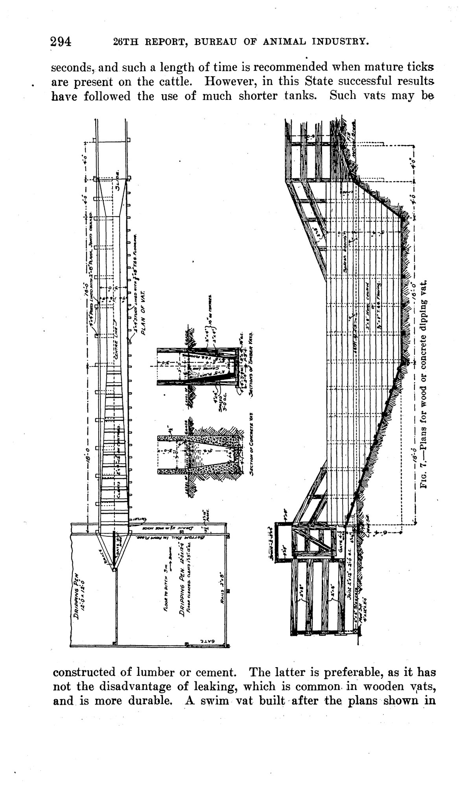

What was posted on the vat itself
The California circular reproduces the notice the Bureau required on every vat in the state, verbatim:
WARNING!
The fluid in this vat is POISONOUS to man and all animals.
Do not allow it to contaminate any feed or water supply.
Cattle should be watered before dipping.
The same circular names Orange County among the counties "heavily infested" in the 1911 campaign, alongside San Diego, Santa Barbara, San Luis Obispo, Fresno and Ventura. It records the quarantined area as 69,755 square miles holding 660,027 head of cattle, of which 153,476 were on tick-infested ranges.
It also explains the chemistry. Work began in 1906 with an oil-float dip — one to two inches of California crude floated on water — which proved injurious to stock in the heat. "The following year the arsenical solution was tried in several vats with such satisfactory results to stock owners and inspectors that its general use was at once inaugurated and has been continued uninterruptedly to the present time."
And it describes how small ranches shared the cost: "cooperative vats", where several owners "would club together, select the most convenient location to build the vat, and subscribe the necessary money for its installation," charging about five cents a head. A cooperative vat serves several ranches from one location, which is a reason a vat may sit where no single ranch headquarters stood.
USDA BAI Circular 174, Eradicating Cattle Ticks in California, MacKellar & Hart, 1911. Grade A1.
The complete 159-term list is published as LEXICON.md alongside this report, formatted for reuse against any document obtained in future.
Part B · What is left of one
Florida has spent thirty years locating, assessing and cleaning up its cattle dipping vats, and its environmental agency has published photographs of what they look like now. This is the answer to the question the lexicon is really asking: what does a person actually see?
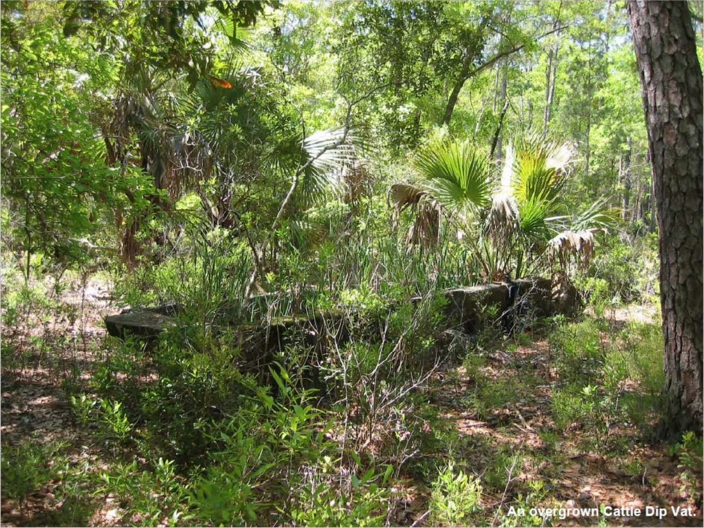
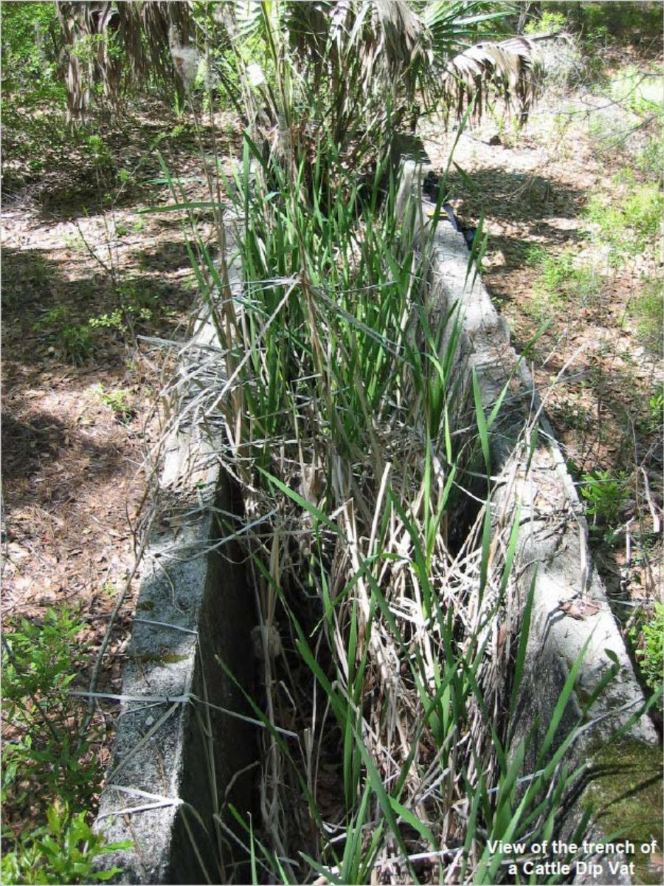
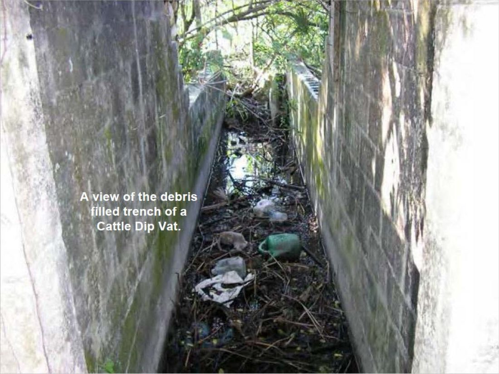
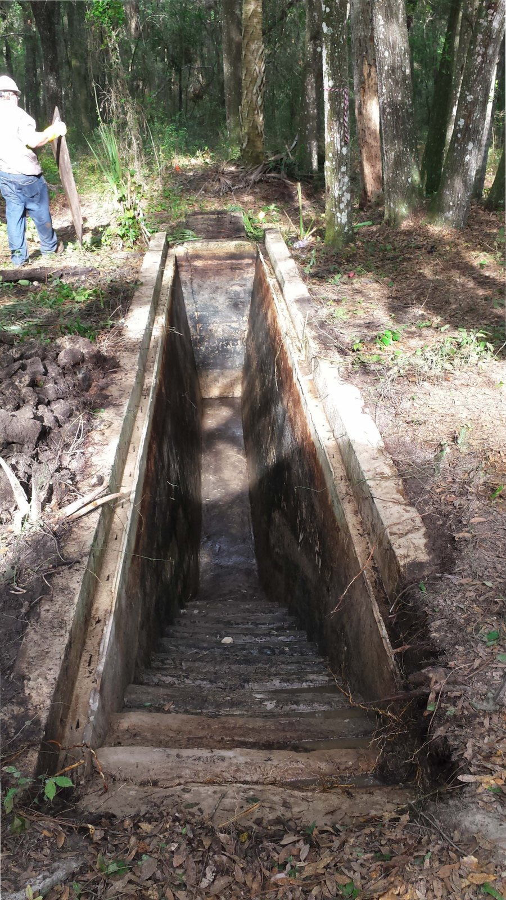
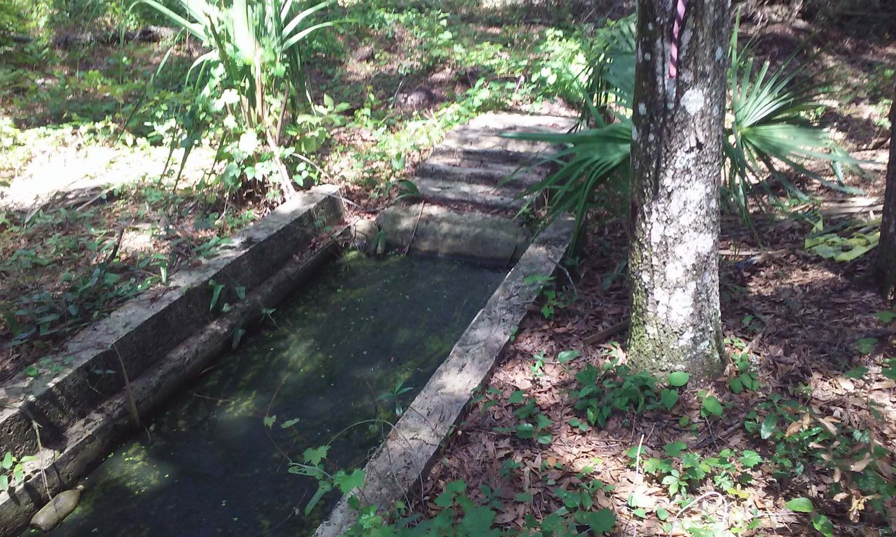
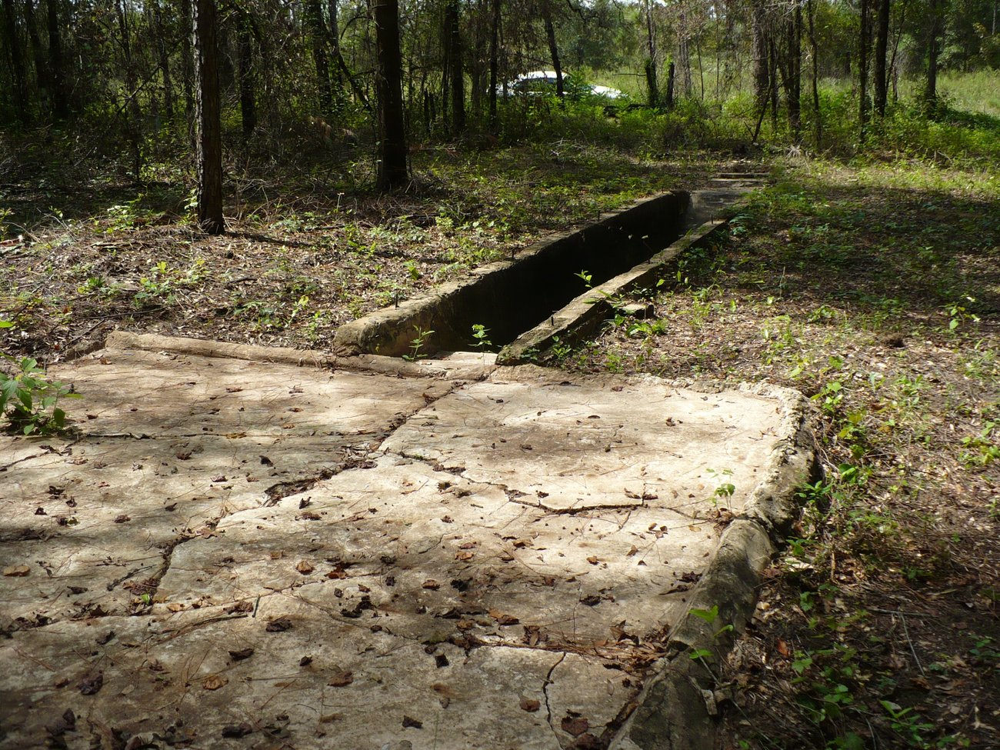
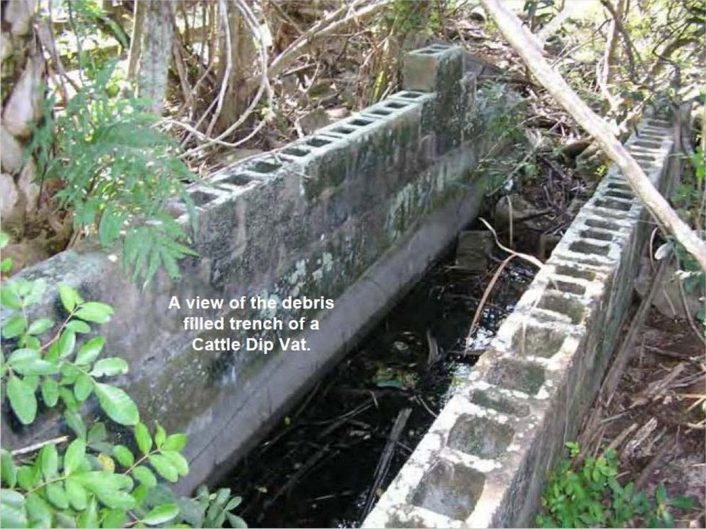
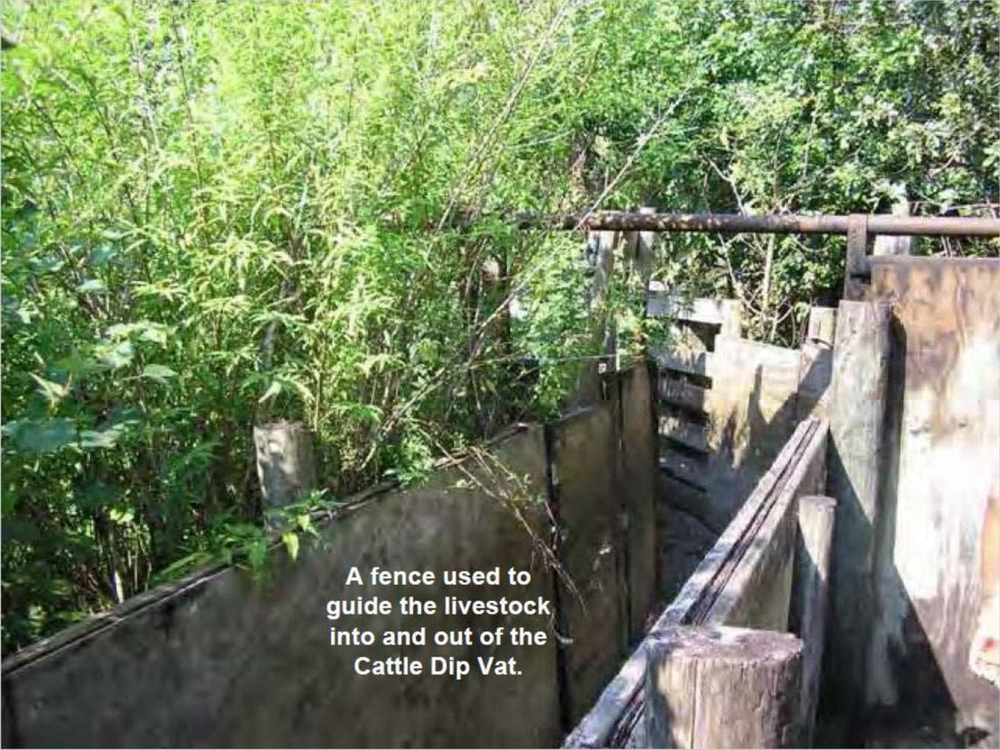
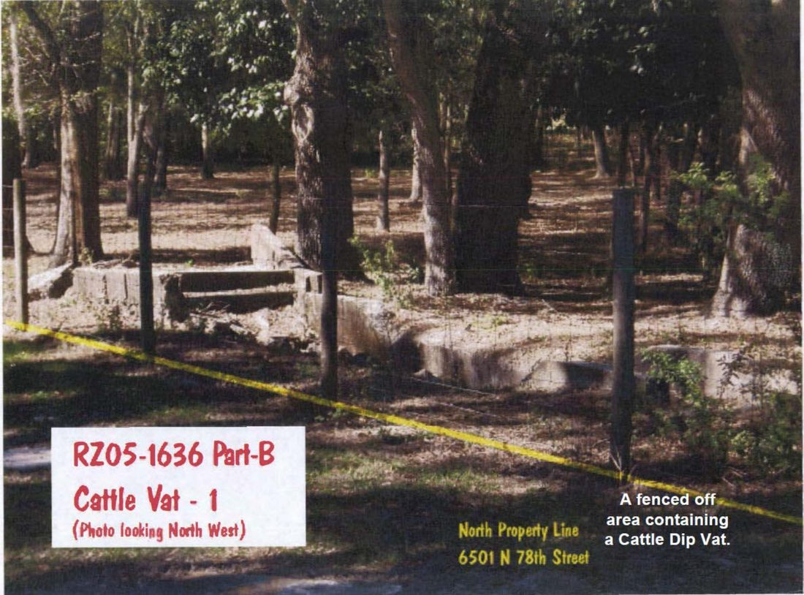
Why Florida has these photographs and California does not
Florida ran a state programme. It built a database of vat sites, published cleanup guidance, commissioned assessment reports, and photographed what it found. The photographs above exist because an agency went looking.
No equivalent California programme has been identified. The absence of Californian photographs of derelict vats is not evidence that California has none. It is evidence that no Californian agency has run this exercise.
The reason the naming problem is real
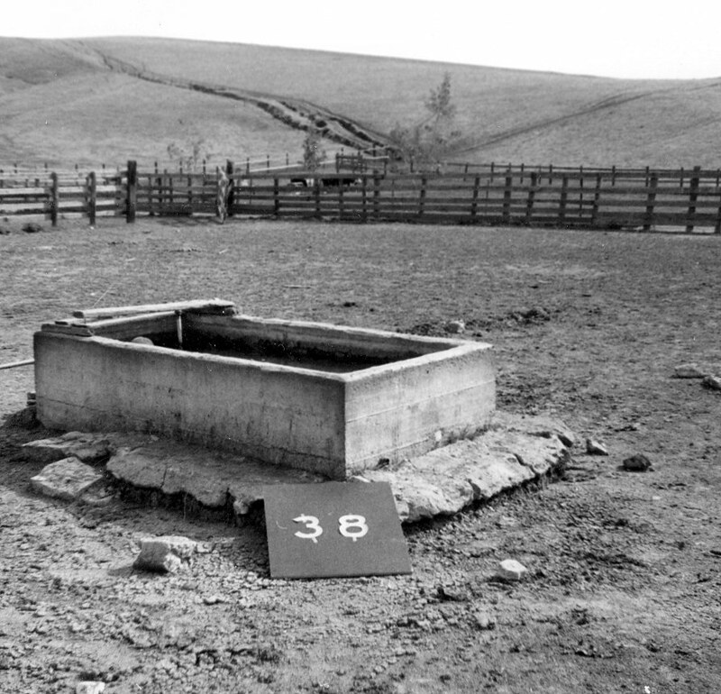
Hold this next to the derelict vats above. A water trough and a dipping vat are not the same thing — a vat is far longer, far deeper, and has a ramp. But both are a concrete rectangle in the ground on a cattle ranch, and the register a surveyor reaches for is the same one. "Stock watering trough" is the first entry in the lexicon in Part A for exactly this reason. It is the most probable misidentification, and here is why.
Orange County Archives, Flickr, CC BY 2.0. "Photo courtesy Orange County Archives."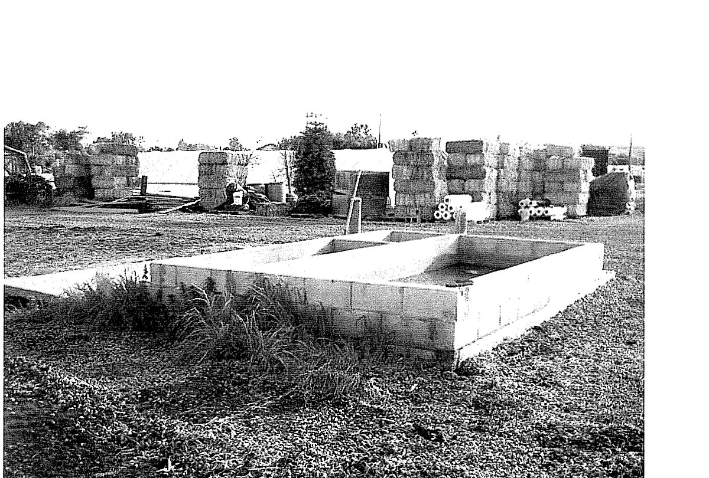
It is not a dipping vat. It is exactly what its caption says. The point is the documentation: an environmental contractor stood in a field in this valley, photographed a concrete structure of ambiguous appearance, wrote down what it was, and only then brought in the excavator. That is the process that did not happen on the ground at Ladera Ranch, because by the time anyone with a camera and a checklist arrived, the ground had been cut and filled.
Environ Strategy Consultants, "Soil Excavation Report," Kinoshita Farm Site, Alipaz Street, San Juan Capistrano, 3 April 2009, Appendix E. California State Water Resources Control Board, GeoTracker case T10000000266. Public record.A negative result worth as much as any photograph
Four repositories of Orange County ranching photography were searched for images of this kind of infrastructure. The result is stark.
| Search, in Orange County photographic collections | Records returned |
|---|---|
cattle dipping vat, Calisphere | 0 |
dipping vat, Orange County Public Libraries digital collection | 0 |
dipping, Orange County Archives | 0 relevant |
corral, Orange County Public Libraries digital collection | 2 records in the entire collection |
chute · cistern · stock pond · bunkhouse | 0 each |
trough | 1, and it is a horse trough on Main Street in Tustin |
This is the documentary finding of Parts D and E repeated in a different medium. The photographic record of Orange County ranching is a record of people — roundups, branding, barbecues, families, cowboys on horses. It is almost not a record of structures at all. Two corral photographs in the county's main ranch collection. Nobody photographed the plumbing.
Searched: Calisphere; Orange County Public Libraries "Orange County Stories"; Orange County Archives; UCLA Library Los Angeles Times Photographic Collection. Four further repositories could not be searched at all because their systems refused automated access: the Online Archive of California, UC Irvine Special Collections, CSU Fullerton digital collections, and the Los Angeles Public Library. Those four remain unexamined and are not part of this negative result.
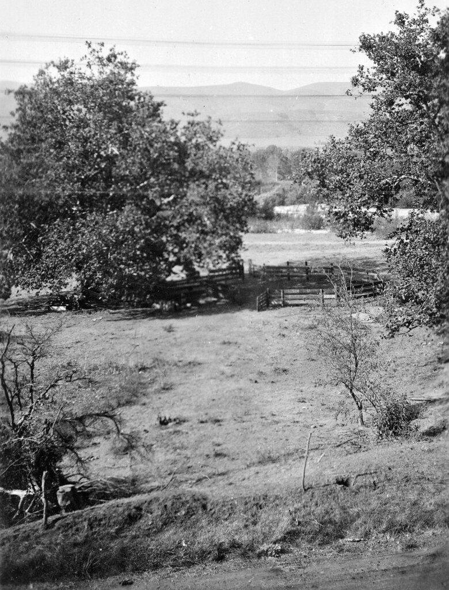
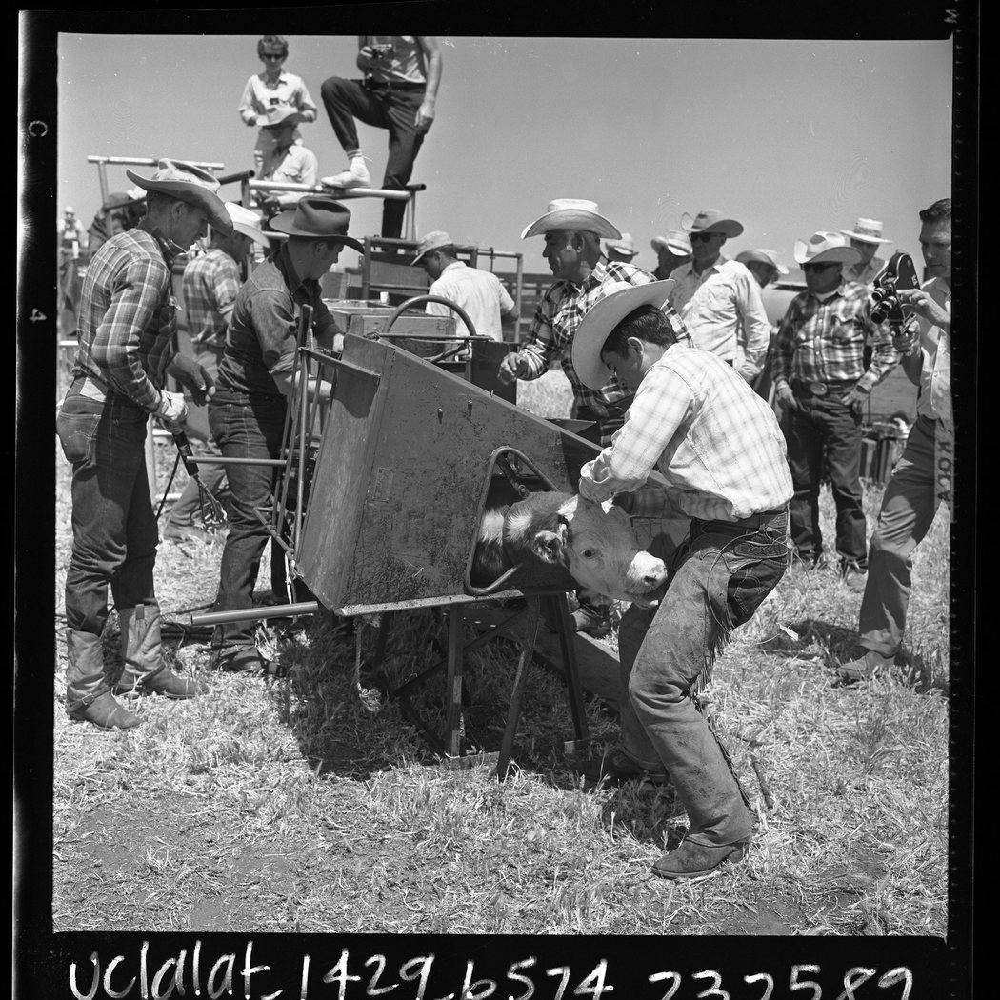
Part C · The sweep, and what it returned
All 159 terms were run against the full text of six environmental and entitlement documents: 470 pages, 956,237 characters. Matching was case-insensitive with flexible word separators, so concrete-lined and concrete lined both register.
| Document in the corpus | Pages | Digitisation | Coverage |
|---|---|---|---|
| EIR 589 Appendix I · Phase I ESA, Planning Areas 1–9 | 218 | Text layer Corel PDF Engine via a network print server, March 2004 | The Ranch Plan, east and south of Ladera |
| Ladera Planned Community Program Text 17 Oct 1995, revised 30 Jul 2003 | 136 | Image only. No text layer at all OCR performed for this report | Ladera Ranch itself — zoning, permitted uses, conditions of approval |
| Oso Grande Phase I ESA | 67 | Scanned, OCR 2011 | Adjacent parcel |
| Oso Grande Phase I Addendum | 43 | Scanned, OCR 2011 | Adjacent parcel |
| Oso Grande DTSC correspondence and addendum | 6 | Scanned, OCR 2011 | Adjacent parcel |
A document in the evidence folder was unsearchable and nobody knew
The 136-page Ladera Planned Community Program Text — the only Ladera-specific document in the set — returned 135 characters of text across 136 pages. It is a pure image scan with no text layer. Any keyword search ever run over this project's evidence folder passed straight through it and returned nothing, correctly and uselessly.
It was rendered at 200 dpi and run through optical character recognition for this report, producing 176,142 characters of searchable text. Everything in Parts E and E comes from those pages. This is the finding that makes the rest of the report possible, and it is worth generalising: before searching a document, confirm it has text to search.


| Register | Present | Terms found, with occurrence counts |
|---|---|---|
| A. Correct names | 0 / 22 | No hits. Not one of dip vat, cattle dip, sheep dip, dipping tank, plunge vat, swim vat, tick eradication, fever tick, arsenic trioxide or sodium arsenite appears anywhere in 470 pages. |
| B. Generic concrete | 8 / 22 | unknown origin (9), concrete tank (6), concrete pad (3), concrete structure (2), concrete lined (2), concrete-lined (2), concrete slab (1), concrete vault (1) — all 26 in EIR 589 only |
| C. Water and agriculture | 4 / 29 | reservoir (19), sump (9), septic (3), cesspool (1) |
| D. Ranching features | 2 / 21 | corral (11), windmill (3) |
| E. Cultural resources | 1 / 22 | records search (19) — every instance refers to a regulatory database search, not a CHRIS archaeological records search |
| F. Phase I ESA | 6 / 26 | UST (139), underground storage tank (97), distressed vegetation (31), stained soil (24), drum (21), buried debris (1) |
| G. Grading and civil | 1 / 17 | demolition (6) |
One hit was discarded as a false positive. The term REC — in ASTM usage a Recognised Environmental Condition — matched twice in the Program Text, where both instances are the abbreviation for recreation in a land-use acreage table. It is excluded from the counts above.
The control group held
Zero hits across all 22 correct names, in 470 pages covering a working cattle ranch and the community built on it. That is the expected result and it is worth stating cleanly: the absence of the term dip vat from these documents is not evidence that no vat existed. It is evidence that nobody was looking for one.
Part D · Three findings that matter more than a keyword hit
Finding 1 · The questionnaire asked the right question and got a "No"
Every Planning Area Phase I in EIR 589 includes an identical owner questionnaire. One item reads, verbatim:
Q: "Are there currently, or to the best of your knowledge have there been previously, any pits, ponds, or lagoons located on the property in connection with waste treatment or waste disposal?"
This is the closest any standard instrument comes to asking about a dipping vat. A vat is a pit. The answer recorded in every planning area was "No."
Why that answer is unsurprising rather than suspicious. The question is scoped to waste treatment or waste disposal. A rancher in 2003 being asked about waste lagoons has no reason to think of a concrete trough his grandfather's generation filled with arsenic under federal order, decades before he was born, which by then was brush-covered ground. The instrument was answered honestly and it could not have surfaced this. The question failed, not the person answering it.
The same questionnaire block also asks about fill dirt "of an unknown origin." In Planning Area 1 the answer was yes: fill was imported for a lemon grove. Elsewhere, no.
Finding 2 · The concrete vocabulary exists in these documents, but only for industry
Every hit on concrete tank, concrete vault, concrete-lined, concrete pad and concrete slab lands on one of two things: the TRW / Northrop Grumman Capistrano Test Site in Planning Area 8, or facilities along Ortega Highway. Examples: closure of the HEPTS concrete tank; a 500-gallon UST removed from a concrete vault; two concrete-lined containment sumps at the Drum Farm; a laser test pad.
On open ranch land, the recorded language is entirely different. Planning Area 9 is typical: "predominantly vacant, used for grazing and open space… No evidence of contamination, distressed vegetation, petroleum-hydrocarbon staining, waste drums…"
What this shows. The consultants had a precise vocabulary for concrete structures and used it whenever one was attached to an industrial facility. Walking grazing land they applied a different checklist: a petroleum and drum checklist. A derelict concrete trough in brush triggers no item on it. It is not stained. It is not a drum. It is not a tank with a fill pipe. It is invisible to the instrument being used.
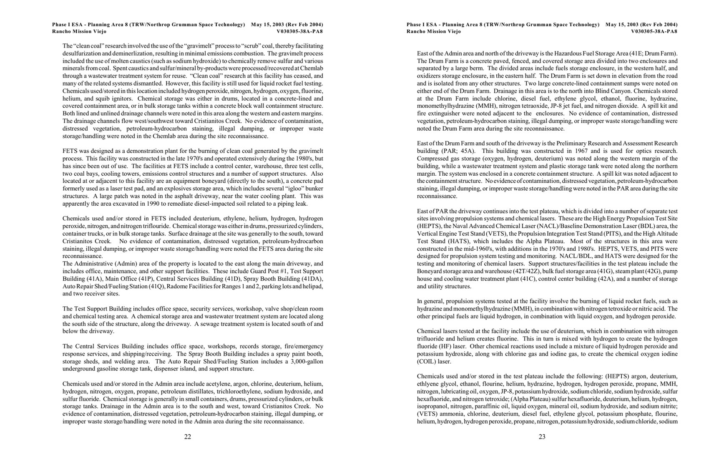
Now read the sentence they use for grazing land, repeated almost word for word across the ranch planning areas: "No evidence of contamination, distressed vegetation, petroleum-hydrocarbon staining, illegal dumping, or improper waste storage/handling were noted." Same firm, same report, same year. A precise vocabulary for industrial concrete, and a petroleum-and-drums checklist for open range.
EIR 589 Appendix I, Phase I ESA, Planning Area 8 (TRW/Northrop Grumman Space Technology), printed pp. 22–23. Grade A2.Finding 3 · Ranch features were recorded when they were still in use
Corrals appear eleven times. The Oaks Corral received its own dedicated Phase I ESA in July 2002. Windmills are noted individually along Verdugo Canyon and Talega Creek. Historic topographic map review notes "a small corral on the RJO property" from a 1974 sheet.
Why this cuts both ways. It shows the consultants did record ranching infrastructure, carefully, which is a point in their favour. It also sharpens the gap: what they recorded were active, visible, above-ground features — a working horse corral, a standing windmill, a structure legible on a topo sheet. A 1911 vat abandoned by 1912, its timber long rotted, its concrete floor at or below grade under ninety years of brush, is none of those things.
One open lead sits in this material. At Cow Camp, the report states an area "was historically used to bury old equipment and waste scraps," and recommends "that the exact location of the buried debris be identified." Whether that identification was ever performed is not in the documents held. It is a live question for a records request, though Cow Camp is on Ranch Plan land rather than in Ladera Ranch.
Part E · The figures that are not there
This report set out to find images in the environmental record. The most important thing it found about images is an absence, and the absence is documented in the record's own table of contents.
First, how thin the baseline is
Before asking what a 1990s review recorded, it is worth seeing what the first survey of this land recorded. In September 1858 a deputy US surveyor walked the Trabuco Rancho for the General Land Office and produced the plat below. On 22,184 acres he annotated one structure.
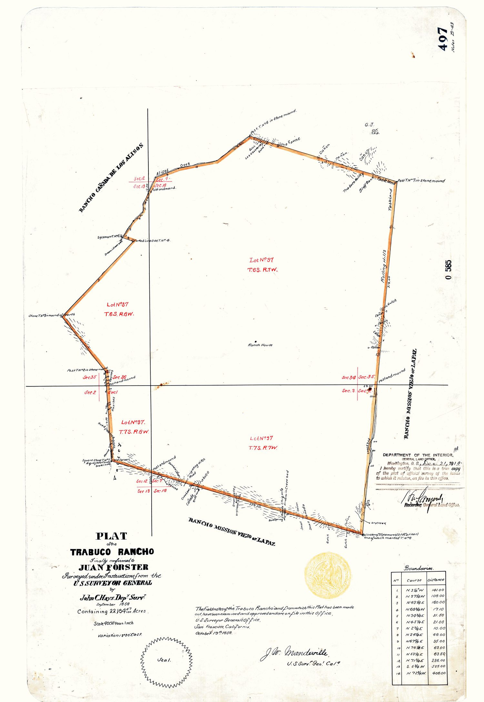
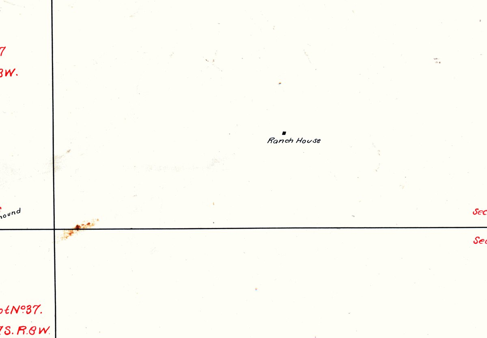
A dipping vat would not be built here for another fifty years. The point is the standard: a surveyor recorded what he thought mattered, at the resolution the job required, and everything else on 22,000 acres went unmarked. That is the normal condition of this landscape's record, and it did not change much until the land was sold for houses.
Same sheet, detail.
None of them is in the document
The 218-page file was examined object by object. It contains nine raster images in total, each 113 by 172 pixels, each in the same position at the head of a Planning Area section. They are the consultant's logo.
There is no Plate 1. There is no Figure 1, 2 or 3. There is no Appendix A, B, C, D or E. Every one of the nine Planning Area sections ends at "7.0 REFERENCES" and the next one begins. The document is nine report bodies with every map, every aerial photograph and every site photograph stripped out.
| Promised in all nine tables of contents | Present | What it would have shown |
|---|---|---|
| Plate 1 — Planning Area Location Map | No | Where each planning area sits, at a readable scale |
| Figure 1 — Site Location Map | No | The parcel in its regional setting |
| Figure 2 — Site Map | No | Features observed on the ground, plotted. The single most relevant missing item |
| Figure 3 — Aerial Photograph | No | A 2000 aerial of the parcel |
| Appendix A — Assessors Parcel Map | No | Parcel geometry |
| Appendix B — Zoning Information | No | Zoning at the time of survey |
| Appendix C — Environmental Records Search | No | The regulatory database results in full |
| Appendix D — Orange County Fire Authority File Data | No | OCFA hazardous-materials file contents |
| Appendix E — Site Photographs | No | Photographs taken by the consultant while walking the land. Exactly the material this investigation has been looking for |
What this does and does not mean
It does not mean the photographs were destroyed or withheld. The metadata says this file was scanned on a network copier in March 2004 for distribution. Large-format plates and photo appendices are routinely left out of a scanned circulation copy because they do not feed through a sheet scanner. The likeliest explanation is mundane.
What it does mean is that the photographs exist by reference. A consultant walked this land, took photographs, and bound them into Appendix E of nine separate reports. That is a specific, named, datable body of images, and it is requestable. Until now this project did not know to ask for it.
And it means every conclusion drawn from this document is drawn from its text alone. Anything the consultant recorded as a mark on a site map rather than as a sentence is not in the version that has been read.
The counterpoint, stated up front
A different Phase I, for a parcel inside Ladera Ranch, does contain its site photographs — sixteen of them. They are the subject of Part F. Holding the two documents side by side is the point of this report: one review of this landscape kept its photographs and one did not, and the one that kept them was walking ground that had already been graded flat.
One more thing the text gives up: where the aerials came from
The historical review in each Planning Area states that aerial photographs "dating from 1952 to 1999 were reviewed at Continental Aerial Photo in Los Alamitos, California," with a 2002 frame from EDAW. That sentence appears fourteen times across the nine reports.
It names a commercial aerial photography archive that held frame-level coverage of this land, and it confirms the review window. The compulsory dipping era of 1907 to 1912 is four decades earlier than the earliest frame anyone looked at.


Part F · The photographs that do exist, and what they show
One document in the evidence set does carry its site photographs. It was filed under a name that hid what it is. It is a Phase I Environmental Site Assessment for land inside Ladera Ranch, and it contains sixteen dated photographs of that ground.
What the document actually is
| Title | Phase I Environmental Site Assessment for the planned school located southeast of Sienna Parkway and O'Neill Drive, Ladera Ranch, California |
| Prepared by | NMG Geotechnical, Inc., Irvine. Project No. 01079-02. Signed by Quin Kinnebrew, CEG, REA II |
| Prepared for | Capistrano Unified School District — the future Oso Grande Elementary School site, about 10 acres |
| Site visit | 31 January 2002. The camera date stamp is legible in several frames |
| Report date | 4 February 2002; Phase I Update 2 October 2003 |
| Regulator | California DTSC, site code 404477-11. DTSC required a Preliminary Environmental Assessment on 8 Sept 2003, visited the site 30 Sept 2003, and issued a concurrence letter on 7 Oct 2003 |
It sits in the project evidence folder under a filename beginning "OsoGrande," which reads as a different, adjacent property. It is not. It is Ladera Ranch.
The finding that matters most is in the dates
The environmental professional arrived after the ground was gone
The report states it plainly, in its own words:
"Since before 1942 and up to 1999, the site had been in an undeveloped state and was part of a larger cattle ranch, used for dry farming and grazing. Mass grading of the site began in 1999 and was completed in the summer of 2001."
"At the time of the site reconnaissance, the site existed as a mass graded, leveled lot… Soil covered the entire site. Pavement and/or vegetation were not located within the site."
The site walk happened on 31 January 2002. Grading finished in summer 2001. A Phase I site reconnaissance conducted after mass grading cannot observe anything that stood on the original surface, because the original surface is no longer there. That is not a criticism of the consultant. It is what a Phase I is: a visual assessment of present conditions, performed when the client needs it, which is at purchase, which here was after the developer had already cut the pads.
The report also records the depth involved: "The subject site is underlain with up to 110 feet of soil fill."
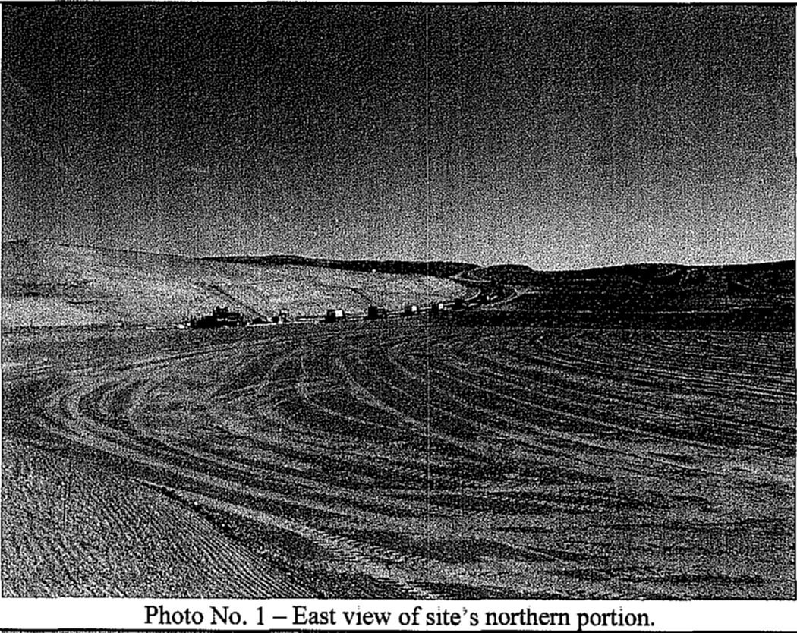
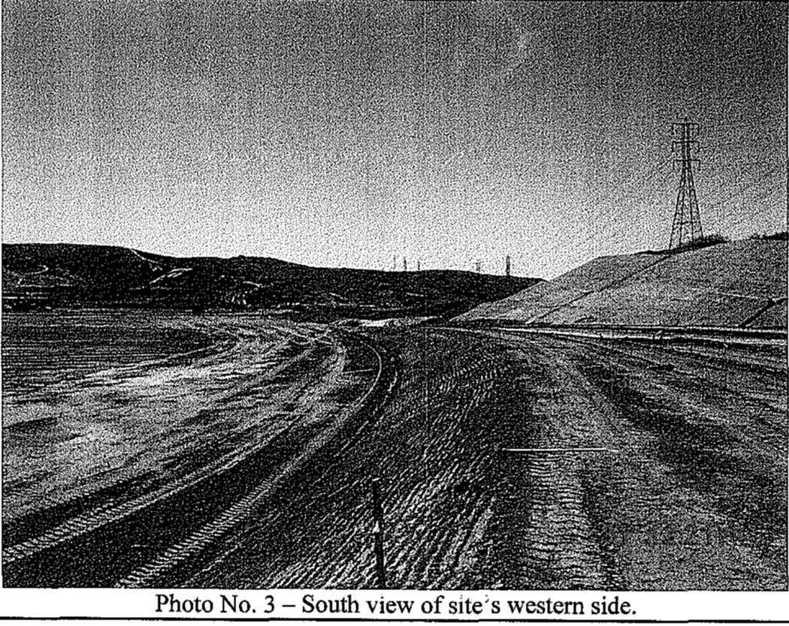
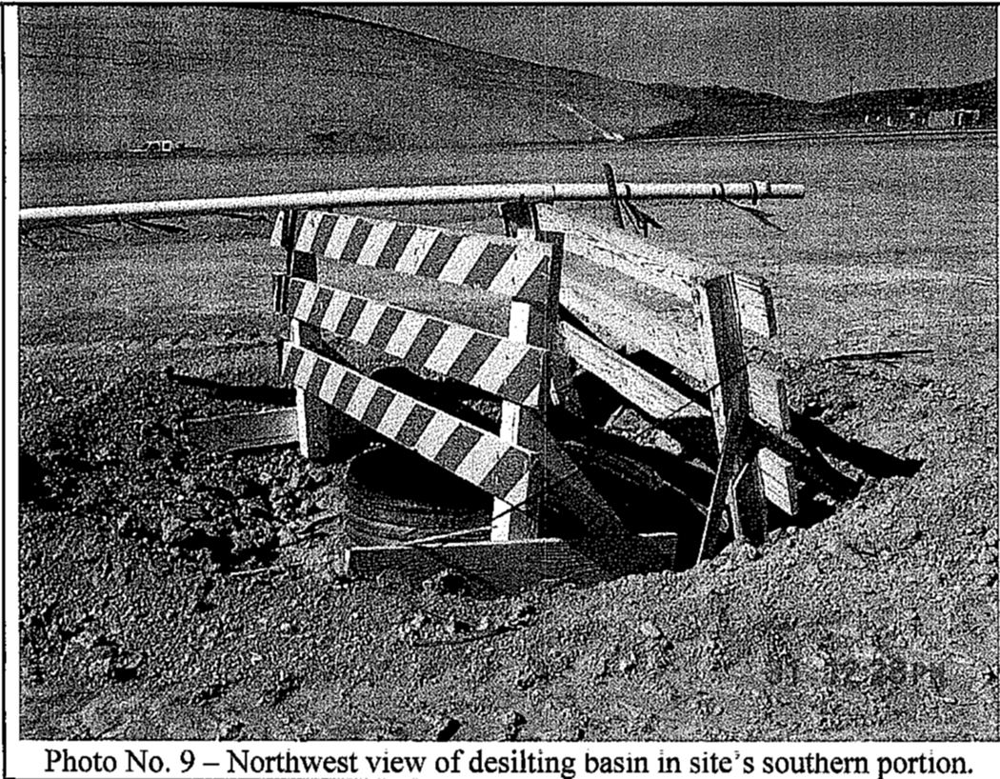
Worth stating carefully, because it cuts against easy assumptions: this is a modern construction drainage feature, not a historic one. It is what a 2002 consultant would correctly record. It is also a useful reminder of how a sunken structure of unexplained purpose photographs — which is the register the lexicon in Part A is built around.
Same source, Photo No. 9.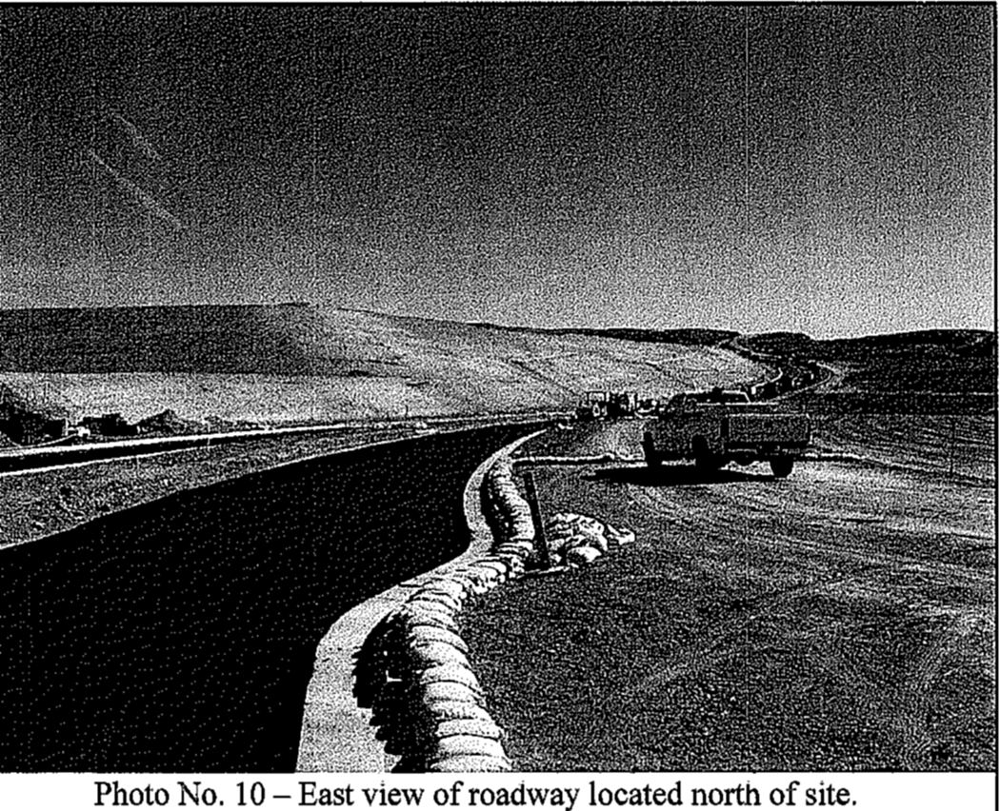
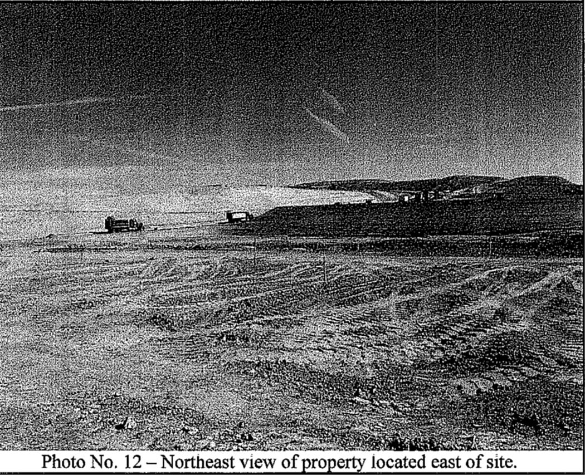
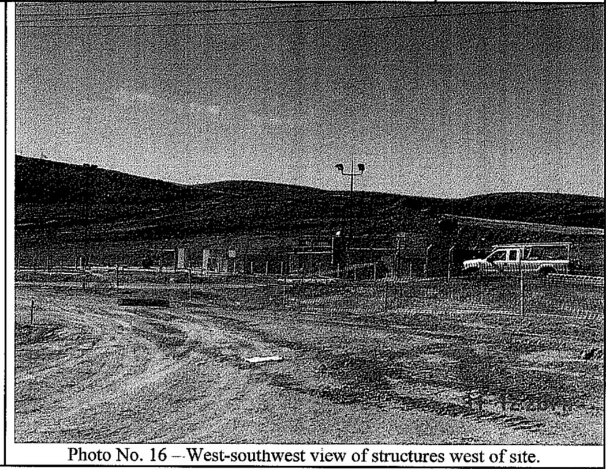
The question that was asked of the people who moved the earth
A grading monitor was interviewed. Look at what he was asked.
Section 3.7 of the report records a conversation with the geotechnical firm that supervised the earthwork — Goffman, McCormick & Urban (GMU), represented by Mr Bob Mutchnik:
"A representative of the GMU, Mr Bob Mutchnik, noted that they monitored onsite soil removal and placement activities since grading was initiated in 1999. Aboveground structures were not located onsite prior to the start of grading. Underground structures, such as fuel storage tanks and clarifiers, were not encountered during soil removals. Stained and/or odorous soils were also not encountered during soil removals."
This is the closest thing in the entire evidence set to an eyewitness account of the ground being opened. Somebody watched the earth move from 1999 onward and was asked, three years later, what was in it.
And the question put to him was about fuel storage tanks and clarifiers — the petroleum-and-drums checklist of Part D, finding 2, applied to a cattle ranch. A derelict concrete trough is not a fuel tank and it is not a clarifier. A truthful "no" to the question asked is not an answer to the question this project is asking.
This is not an allegation against anyone. The consultant asked the standard question, and got an honest answer. It is a demonstration of how a specific object can pass through an entire professional process without anybody ever being asked about it.
Where the soil went
Stripped from the surface, and placed lower down
The report's own account of pesticide risk describes a mechanism, and it is worth reading closely:
"Any pesticides and/or herbicides at the site were likely in the upper surficial soils, which were removed prior to fill placement. These materials, if any, were likely mixed with clean soil and/or placed at lower depths during fill placement."
Two things follow, and only two. First, the reasoning is about agricultural spraying on dry-farmed land, which is the right thing to consider for a wheat field and a different question from a point source. Second, and factually: the material is not described as leaving the property. It is described as stripped from the surface, mixed, and placed at depth as engineered fill. The report separately records fill of up to 110 feet, "excavated from onsite sources and from undeveloped areas within the immediate site vicinity."
DTSC's stated concern about this fill, in 2003, was methane from buried organic material. It was resolved by confirming that vegetation was stripped before cut and fill. Arsenic was not the question anyone was asking.
No sample has been taken. Nothing here establishes that anything is in that fill. What it establishes is that if surface soil anywhere in the cut areas carried anything, the documented mechanism moved it down rather than away — and that no one has looked.
Two wells, named in the record
An oil well and a water well, both south of the school site
The same report reviewed historic topographic maps and the Munger Map Book of California oil and gas fields, and recorded this:
"The closest manmade structures shown include a jeep trail and a well (marked as a groundwater well) located approximately 500 feet to the west and 700 feet to the south, respectively." — 1942 Santiago Peak 15-minute quadrangle
"The closest oil well (Union O'Neil 4520121) is shown approximately 750 feet south (down gradient) of the site. This oil well, likely the well shown on the topographic maps, is marked as abandoned."
Why this is worth pulling out. A named, numbered oil well on O'Neil land is a thread that can be followed: California's oil and gas regulator holds well records, and an abandoned well has an abandonment record. It is also the kind of feature that leaves concrete behind — cellars, pads, sumps.
And the water well matters for a different reason. A dipping vat needs several thousand gallons of water on a fortnightly cycle, so vats were built where water was. A groundwater well marked on a 1942 map, 700 feet from a school site, is a location worth knowing about for that reason alone.
Read the report's own hedge. It says the oil well is "likely the well shown on the topographic maps" — treating the 1942 groundwater well and the Munger oil well as probably the same feature. That may be right. It may also be two different wells in the same area, conflated in a desk review. The distinction is unresolved in the record and should not be resolved by assumption.
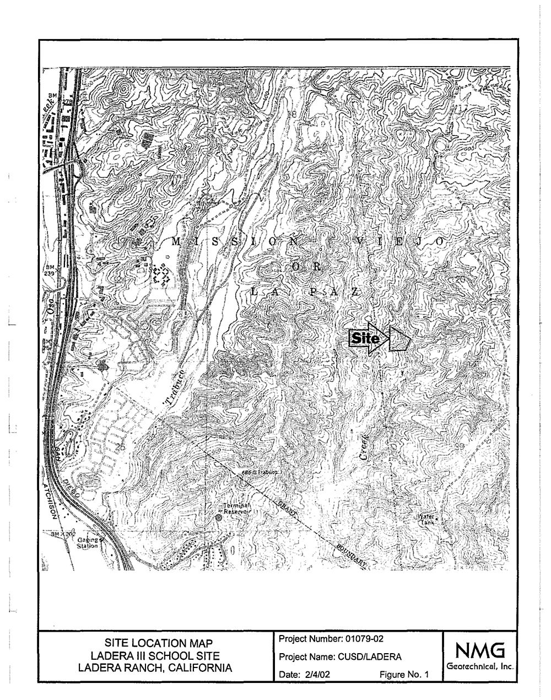
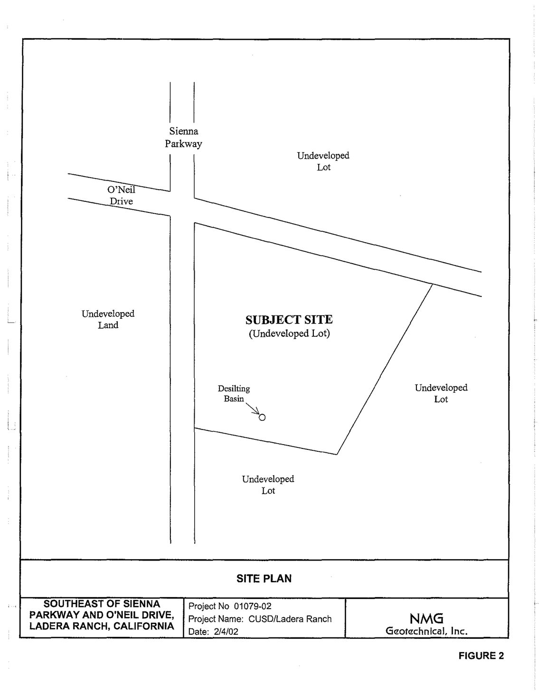
What the state's own database says about this site
Two entries in the public record, and one absence
The case appears in California's hazardous-site database as EnviroStor 30020004, site code 404477, "Oso Grande School." Its status is "No Action Required," dated 7 October 2003 — the concurrence letter quoted above.
One field in that record is worth reading exactly as written. Against "past use(s) that caused contamination," the entry is:
AGRICULTURAL – LIVESTOCK
Read this carefully, because it is easy to over-read. The site's status is no-action-required, and nothing in the file reports that contamination was found. This is a descriptive land-use classification in a database field, applied to a parcel that was reviewed and cleared. It does not establish that contamination occurred. What it establishes is narrower and still worth recording: when a state agency classified the past use of this piece of Ladera Ranch, the category it chose was livestock agriculture.
The absence: three other schools, no case at all
Capistrano Unified operates several schools in Ladera Ranch. A search of the state database for the district returns fifteen cases county-wide, and for the city of Ladera Ranch it returns one.
| Ladera Ranch school | State hazardous-site case |
|---|---|
| Oso Grande Elementary | EnviroStor 30020004 Phase I, PEA required then withdrawn, no action required 2003 |
| Ladera Ranch Elementary | No case |
| Ladera Ranch Middle School | No case |
| Chaparral Elementary | No case |
Only one Ladera Ranch school site ever entered state environmental review. The other three have no Phase I, no preliminary assessment and no soil data in the state system.
The likely explanation is procedural, and should be stated rather than implied. California's requirement for Department of Toxic Substances Control review of school sites is tied to state funding and to acquisition dates, so schools built on land acquired outside those triggers are not captured. This is a gap in the review regime, not evidence that anyone avoided anything. Confirming the actual reason for each school would require asking the district and the department directly, and this report has not done so.
What this part adds up to
- Photographs of Ladera Ranch ground from the construction era exist, are public, and are in this project's own evidence folder. There are sixteen of them and they are dated 31 January 2002.
- They show a finished graded pad. The environmental review of this parcel happened after the earth was moved, so its site reconnaissance had nothing historic left to observe. This is the single most important structural fact in the whole report.
- A person who watched the grading was interviewed, and asked about fuel tanks and clarifiers.
- The documented fate of surface soil was to be stripped and replaced at depth as engineered fill, on site.
- Two wells are named in the record, one of them with a number, both about 700 to 750 feet south of a school site.
- Only one Ladera Ranch school ever entered state environmental review, and the state's classification of that parcel's past use is agricultural – livestock. Three other schools have no case at all. Part J.
Part G · The missing document now has a number
Every previous search in this project ran against the wrong environmental impact report. The correct one has now been identified by number, certifying body and date.
Final EIR 555
The Ladera Planned Community Program Text refers twice to EIR 555 — to "Exhibit 1-3 entitled 'Proposed General Plan Land Use Amendment,' of EIR 555," and to "sub-measures A through Q of Mitigation Measure 26 of EIR 555."
An Orange County Zoning Administrator minute for a project located in Ladera Ranch confirms the citation in official language: "Find that Final EIR 555, previously certified by the Board of Supervisors on 10/17/95 and Addendum PA970174 previously approved by the Planning Commission on 4/7/98 together are approved for PA 180010."
The Program Text's own title page is dated 17 October 1995 — the same day the Board certified EIR 555. The zoning document and the Program Text corroborate each other independently.


| Document | Covers | Status |
|---|---|---|
| Final EIR 555 + Addendum PA970174 certified 17 Oct 1995; addendum 7 Apr 1998 | Ladera Ranch — roughly 4,000 acres, about 1,600 preserved as open space | Not obtained. Now precisely identifiable and requestable. |
| EIR 589 Appendix I Phase I ESA 2003 | The Ranch Plan — roughly 22,815 acres east and south | Obtained and swept. Does not cover the Ladera footprint. |
| Ladera PC Program Text 1995, rev. 2003 | Ladera Ranch zoning and conditions of approval | Obtained, OCR'd and swept for this report. Names EIR 555 and its conditions, but contains no site reconnaissance. |
Why this correction matters more than any keyword result
A reader could reasonably have assumed this project had searched "the Ladera EIR" and found nothing. It had not. It had searched the Ranch Plan EIR — a different application, a different footprint, approved years later.
Parts C and C therefore describe how the consulting profession wrote about this landscape. They do not describe what was recorded at the specific location in question, because until now the document that would say so could not be named. It can now.

The governing constraint from this project's earlier environmental-review audit still applies: the historical land-use review in the obtained Phase I began at 1952. The 1907–1912 compulsory dipping era sits forty years outside that window. EIR 555 may prove silent for the same structural reason. That is a reason to read it, not a reason to skip it.
What EIR 555 and its appendices should contain
- A cultural resources technical report — a records search and pedestrian survey of the 4,000-acre plan area. Historic-period ranching features are recorded here, on DPR 523 forms, when they are recorded at all.
- A biological resources survey, whose field notes routinely describe concrete structures, stock ponds and troughs as incidental observations.
- A hazardous materials or site assessment section, and any Phase I Environmental Site Assessment prepared for the plan area.
- Mitigation Measure 26 and its sub-measures A through Q, cited by the Program Text in connection with a Resource and Environmental Management Plan. The full text of that measure is not in any document held.
Part H · The report series that is required to exist
This is the strongest result of the sweep. It is not a keyword hit. It is a condition of approval that obliged someone to be watching the ground while it was opened.
The ARCHAEO/PALEO condition, verbatim
"Prior to the approval of each Area/Subarea Plan or recordation of any final tract/parcel map (except for financing purposes), applicable County EMA Standard Conditions pertaining to archaeological and paleontological surveys, tests, reports, investigations, salvage, excavations and observance of grading activities in compliance with Board of Supervisors, Resolution 77-866 shall be placed on each Area/Subarea Plan or Tract/parcel map…"
Ladera Planned Community Program Text, General Regulations · recovered by OCR for this report

What that sentence commits
- It applies to every Area Plan and every tract map in Ladera Ranch. Not to a sample, not to sensitive areas only. Each one.
- It includes surveys and reports. A survey produces a report whether or not anything is found, and a negative survey report is still filed.
- It includes "observance of grading activities." That is archaeological monitoring: a qualified person physically present while earth is moved. Ladera Ranch was graded through the late 1990s and early 2000s. If a concrete structure was cut through during grading, the person whose job was to notice it was standing there under a recorded condition of approval.
- It routes through a named County office — the Manager, Harbors, Beaches and Parks / Program Planning — which means there is an approving authority with a file.
Resolution 77-866, and where the objects went
Orange County Board of Supervisors Resolutions 77-866 and 87-516 require that all County-permitted projects be monitored for archaeological and paleontological materials, and that finds be donated to the County of Orange "for the purpose of promoting scientific study and for display for the education and enjoyment of the people of Orange County."
Those donated materials form the County of Orange Paleontology and Archaeology Collections, now more than six million fossils and artifacts held in perpetuity by the County and curated at a dedicated facility.
The consequence. There are two independent trails, not one. A paper trail of monitoring and survey reports, which goes to the regional CHRIS office. And an object trail of anything collected, which goes to the County collection with an accession record naming the project it came from. A search of the collection by project name is a different question from a search of the literature, and it has not been asked.
Collections contact: copa@ocparks.com · 714-973-6655.

The honest caveat
Archaeological monitoring in the 1990s was, in practice, oriented toward prehistoric deposits and fossils. A monitor trained to watch for lithics and bone, encountering a poured concrete slab of twentieth-century date, would frequently classify it as modern debris outside the scope of the condition and not record it. The condition guarantees that someone was present. It does not guarantee that a concrete feature was written down.
That is still a substantially stronger position than the project held yesterday: from "no record is known to exist" to "a specific, named, mandated report series exists, and it has not been read."
Part I · Where a record of this feature would actually be
Ranked by the probability that a derelict concrete structure on Ladera ground is described in that archive, in any vocabulary.
| Archive | What it holds and why it ranks here | Access | |
|---|---|---|---|
| 1 | CHRIS · South Central Coastal Information Center CSU Fullerton, Dept. of Anthropology 657-278-5395 · sccic@fullerton.edu |
The California Historical Resources Information System regional office for Orange County. Holds every archaeological survey and monitoring report generated for CEQA compliance in the county, and every DPR 523 site record, including reports never published anywhere else. This is where the Resolution 77-866 reports of Part H would be filed. A records search returns all reports covering a parcel, whether or not anything was found.
Institutional note: SCCIC is housed in the same university department as the CSU Fullerton team that has offered soil sampling on this project. A coincidence of geography, not a shortcut, but a qualified academic requester is unusually close at hand. |
Restricted. Confidential under Gov. Code § 6254.10. Qualified consultants, academic researchers and landowners only. Fee-based. Not a public-records request. |
| 2 | OC Public Works · EIR 555 and its appendices certified 17 Oct 1995 · Addendum PA970174, 7 Apr 1998 |
The document of Part G. Request the certified EIR, the cultural resources technical report, the biological resources report, any Phase I Environmental Site Assessment, and the full text of Mitigation Measure 26 as separately named items, because appendices are filed and released separately from the certified volume. | Public. CPRA request. |
| 3 | OC Public Works · Area Plans and concept grading plans | The Program Text requires every Area Plan to include a Concept Grading Plan, and every site development permit submittal to show "topography, existing and proposed" and "location of significant vegetation and an indication of the resources to be altered." Rough grading plans carry existing-conditions and demolition exhibits. This is where the feature most likely appears as a labelled drawing rather than as prose — and a drawing has a station and an offset, which is a coordinate. | Public. CPRA request, by tract number and village. |
| 4 | DTSC EnviroStor · school property evaluations Known case: site code 404477-11 |
Every California school site is reviewed by the Department of Toxic Substances Control, and Ladera Ranch has several schools. Each case file holds a Phase I, the agency's determinations, and — where a Preliminary Environmental Assessment was required — actual soil analytical results with sample locations and depths. Much of it is downloadable without a formal request. This is the only identified route to laboratory data for Ladera Ranch soil that does not require new fieldwork. | Public. Online. |
| 5 | CalGEM · oil and gas well records | Well records, well summaries and abandonment records. The 2002 Phase I names Union O'Neil 4520121, abandoned, about 750 feet south of the Oso Grande school site. An abandoned well has a file, and it leaves concrete on the ground. | Public. Online well finder and document search. |
| 6 | County of Orange Paleontology and Archaeology Collections copa@ocparks.com · 714-973-6655 |
The object trail of Part H. More than six million items donated under Resolutions 77-866 and 87-516, with accession records naming the project each came from. An accession search by project name is a different question from a literature search, and it can confirm that monitoring occurred even if the report itself is hard to obtain. | Public institution. Research inquiry. |
| 7 | DWR · Well Completion Report archive | Drillers' logs by section, township and range. Relevant twice over: dipping stations were sited where water was, so the well record maps the candidate locations; and the obtained documents already note wells on ranch land without describing what stood beside them. | Public. Location precision reduced in the public tier. |
| 8 | Orange County Archives Old County Courthouse, Santa Ana |
Horticultural and Agricultural Commissioner records, Board of Supervisors minutes, and county photograph collections. The 1907–1912 quarantine was administered locally, so the inspection and compliance paperwork was generated locally. The only archive on this list that targets the original era rather than the development era. | Public. In person, by appointment. |
| 9 | Rancho Mission Viejo private archive | The landowner's own ranch records, aerial photography and construction photography. The most likely single source of photographs taken during grading, which is the specific thing sought. Not subject to public-records law; access is by relationship. | Private. By request only. |
| 10 | Continental Aerial Photo, Los Alamitos named in the Phase I itself |
The commercial archive where the consultants actually reviewed frames from 1952 to 1999 for this land, named fourteen times in the obtained Phase I. Whether the company still trades under that name should be checked, but the frame identifiers are printed in the report — for example 261-8-29-114(1) for 1959 — which is enough to order a specific frame from whoever now holds the library. | Commercial. Order by frame number. |
| 11 | UCSB Library aerial photography plus OC Survey historical imagery |
Not a written record, but the only source that can independently date a structure's appearance and disappearance. Frame-level coverage of Orange County runs back to the 1920s–30s. A concrete pad often reads from the air as a bright rectangle present before grading and absent after. | Public. Online index; scans on order. |
One more destination, created by Part D
Appendix E — Site Photographs, for all nine Planning Areas. It is not an archive so much as a named exhibit that should sit in the County's own EIR 589 file, and very likely in the consultant's project file as well. Ask OC Public Works for the complete Appendix I including all plates, figures and appendices, and say plainly that the copy in circulation contains none of them.
What the document metadata actually showed
Embedded metadata was read for every PDF in the evidence set. It carries no authorship and no geolocation, but it is not empty, and two things in it are worth recording.
- The Ranch Plan Phase I was scanned on a network copier — creator "Print Server 110," producer "Corel PDF Engine," created 9 March 2004 and modified 9 June 2004. A paper original, digitised for distribution.
- The four Oso Grande documents were all produced by Adobe's Paper Capture OCR plug-in on 28 April 2011, within about forty minutes of one another. They were digitised as a single batch in one sitting, which is the signature of one request being answered — a useful thing to know when asking an agency what else was in that file.
Where metadata will matter is in material not yet obtained. Native grading-plan CAD files carry coordinates. Original field photographs carry capture dates and sometimes GPS. Both should be named explicitly in any request, because a request for "the report" returns a PDF, and a request for "the associated survey data and field photographs" may return something else entirely.
Part J · What to request, from whom, in what order
Nine requests. Ordered so that each is cheap, independent, and does not wait on the answer to the one before it. Requests 1 and 2 can be filed the same day.
Request 1 · OC Public Works — EIR 555 and its appendices
Name the document by number. Suggested wording:
"Final Environmental Impact Report No. 555 for the Ladera Planned Community, certified by the Board of Supervisors on 17 October 1995, together with Addendum PA970174 approved by the Planning Commission on 7 April 1998, and all technical appendices, specifically: (a) the cultural resources or archaeological technical report; (b) the biological resources technical report; (c) any Phase I Environmental Site Assessment or hazardous materials assessment prepared for the plan area; and (d) the complete text of Mitigation Measure 26, sub-measures A through Q."
Why this wording. A request for "the EIR" routinely returns the certified volume alone. The appendices are where field observation lives, and they are filed separately.
Request 2 · OC Public Works — Area Plans, grading plans, demolition exhibits
"Approved Area Plans and Subarea Plans for the Ladera Planned Community, including the Concept Grading Plan required for each; and rough grading plans with any existing-conditions or demolition exhibit identifying existing improvements to be removed, existing structures, or existing concrete to be demolished, for the tracts comprising Ladera Ranch."
Why this is the strongest public request on the list. It is cheap, it is unambiguously public, and the thing sought appears in it as a labelled drawing with survey coordinates rather than as a sentence somebody had to think to write.
Request 3 · OC Public Works — the complete Appendix I, with its plates and appendices
"The complete Appendix I (Phase I Environmental Site Assessment) to EIR 589, including for each Planning Area report: Plate 1, Figures 1 through 3, and Appendices A through E — specifically Appendix E, Site Photographs. The copy in public circulation contains the report text only; none of the plates, figures or appendices are attached to it."
Why to say the last sentence. Naming the defect in the circulating copy is what stops the request being answered with the same incomplete file. This is the request that could put the consultant's own photographs of this land in front of you.
Request 4 · DTSC — the Oso Grande file, and why the other three schools have none
The Oso Grande case is EnviroStor 30020004, site code 404477, and its four documents are already public and downloadable. Two of them this project does not yet hold:
- The 8 September 2003 determination that a Preliminary Environmental Assessment was required — three pages.
- The 2 October 2003 Phase I Update, which appears to recite the 16 September clarification letter and the 30 September site visit. No separate record of either exists as a filed deliverable.
The more important request is the one the database cannot answer:
"For each Capistrano Unified School District school site in Ladera Ranch — Ladera Ranch Elementary, Ladera Ranch Middle School and Chaparral Elementary — please confirm whether any environmental site assessment was prepared, by whom and when, and if no Department review occurred, the statutory basis on which the site was exempt."
Address it to both the district and the department. The expected answer is a procedural one about funding and acquisition dates. Getting it in writing closes the question properly rather than leaving an absence to be misread.
Request 5 · CalGEM — the abandoned oil well
The 2002 Phase I names "Union O'Neil 4520121," an abandoned oil well roughly 750 feet south of the Oso Grande school site, taken from the Munger Map Book. The state regulator's own well database resolves this further. Two recorded wells fall inside the Ladera Ranch boundary, both plugged dry holes:
| API | Well name | Operator of record | Section |
|---|---|---|---|
| 04-059-01270 | O'Neill 1 | Union Oil Company of California | T7S R7W Sec 30 |
| 04-059-01005 | Citizens National Trust & Savings B-1 | Exxon Mobil Corporation | T7S R7W Sec 20 |
Four more O'Neill wells sit just outside, in Rancho Mission Viejo. The electric-log dates across the group run 1959 to 1964 — a single coherent exploration campaign on this land, which none of the environmental documents mentions.
A mechanical note that will save an hour. The state's well-record portal will not accept the full API. Drop the leading "04" and query the remaining eight digits — 05901270 and 05901005 each return a file list. The files are then released by email through a short form.
Worth doing for three reasons. An abandoned well leaves concrete. The 1942 topographic map separately shows a groundwater well about 700 feet south of the same site, and the Phase I treats it as probably the same feature, which it may not be. And the well coordinates in the state database are flagged as digitised from scanned mylar maps rather than surveyed, so they are approximate and should not be treated as located.
Request 6 · SCCIC records search — through a qualified requester
This cannot be filed as a public-records request and should not be attempted as one. It requires a qualified consultant, an academic researcher, or the landowner. The practical route is to ask whether a faculty member of the CSU Fullerton team already engaged on sampling will submit the records search, since SCCIC sits in their own department.
What to ask for: all previously recorded resources and all previously conducted survey and monitoring reports within the study area and a half-mile buffer, with explicit attention to reports produced under Orange County Board of Supervisors Resolution 77-866 for the Ladera Planned Community, and to historic-period ranching features of any description.
Handle the result carefully. CHRIS records are confidential by statute. Locational data from a records search must not be published, and this project's existing practice of staging coordinate disclosure applies with more force here, not less.
Request 7 · County of Orange Paleontology and Archaeology Collections
A research inquiry to copa@ocparks.com, asking whether the collection holds accession records for material donated from the Ladera Planned Community, and if so, what projects, what dates, and what monitoring firms are named. The accession record is the receipt for the monitoring, and it can establish that a monitor was on the ground even where the report is slow to surface.
Request 8 · Rancho Mission Viejo and the Orange County Archives
Two relationship requests, not legal ones. From the landowner: photographs taken during grading and pre-construction survey of the Ladera villages, naming that original digital files or negatives are preferred over prints, because capture dates and any embedded location data are the point. From the County Archives: Horticultural and Agricultural Commissioner records, Board of Supervisors minutes and photograph collections for 1907–1912 — the only request on this list that targets the era itself.
Request 9 · Ask California whether it has ever done what Florida did
Florida ran a state cattle dipping vat programme: it built a site database, published cleanup guidance, and photographed what it found. Part B is illustrated almost entirely with Florida's pictures because no equivalent California programme has been identified.
Put the question directly to the Department of Toxic Substances Control and the State Water Resources Control Board:
"Has the Department, or any California agency, ever inventoried, assessed or remediated historic cattle dipping vat sites associated with the 1907–1912 tick eradication campaign? If so, please identify the programme and any site list. If not, please confirm that no such inventory exists."
A clear "no such inventory exists" is a useful answer. It converts an assumption in this report into a documented fact, and it is the kind of finding that belongs in the public record whatever else comes of this work.
What would change the picture
| If a request returns… | Then |
|---|---|
| Any of the 22 correct names, anywhere on Ladera ground | The question stops being archival and becomes a sampling question immediately. |
| A demolition or existing-conditions exhibit labelling concrete of unstated purpose | A coordinate. The highest-value realistic outcome of this entire sweep. |
| A monitoring report noting a concrete feature of modern or unknown date | A recorded location, a date of recording, and a description written by someone who stood on it. |
| An accession record naming the Ladera project | Confirmation that monitoring occurred, plus the name of the firm that did it — which is itself a party who can be asked. |
| Appendix E, for any planning area | Dated photographs of ranch land taken by a professional who was looking at it carefully, even if not for this. |
| A written explanation of why three Ladera schools had no state review | A closed question instead of an open absence, and a documented account of where the review regime does and does not reach. |
| Nothing, across all nine | A defensible, documented statement that the environmental record of Ladera Ranch is silent on this class of feature — a finding about the review, not about the ground, and worth stating in exactly those terms. |
Limitations, figure provenance, and sources
What this report does not establish
- It does not establish that a dipping vat exists anywhere in Ladera Ranch. The concrete base observed in Phase 2 is an unidentified concrete structure. No sample has been taken from it and no laboratory result exists for it. No photograph in this report shows it.
- It does not establish contamination at any location, and it does not establish that any person was exposed to anything. Nothing here shows that anything is present in the fill described in Part F.
- It does not establish that anything was concealed or that anyone acted improperly. Every gap identified here is explained by the scope of the instrument in use. A questionnaire scoped to waste disposal, a historical review beginning in 1952, a petroleum-and-drums field checklist, a monitoring programme oriented toward prehistoric deposits, and a Phase I lawfully conducted after grading would each independently miss this feature with everyone doing their job correctly. The missing plates of Part E are most likely a scanning convenience.
- The interview in Part E is not evidence of absence. A grading monitor truthfully answering that no fuel tanks or clarifiers were encountered has answered the question he was asked.
- The desilting basin photographed in Part E is a modern construction drainage feature, not a historic structure, and is presented as such.
- Part H establishes that a report series was required to exist, not that it records anything relevant.
- A zero result is not evidence of absence. It is evidence that the search term and the recorder's vocabulary did not meet.
On publishing locations
Figures in Part F are published at scales that show setting rather than resolving a point location, and the precise site coordinates that appear in the source document are not reproduced. The metes-and-bounds description and the zoning-map course data in Part G are shown as page images and are not transcribed. CHRIS records, if a search in Part I returns any, are confidential under Government Code § 6254.10 and their locational data must not be published at all. This project's practice of staging coordinate disclosure applies throughout.
Method
- Lexicon. 159 terms in seven registers, built by asking, for each profession that would plausibly encounter the structure, what that profession's standard reporting vocabulary would produce. Register A holds the 22 correct names and functions as a control group.
- Corpus. Six documents, 470 pages, 956,237 characters. Three were already searchable. Three Oso Grande documents carry 2011 Acrobat Paper Capture OCR. The Ladera Program Text had no text layer and was rendered at 200 dpi and OCR'd for this report using the macOS Vision text recogniser.
- OCR is imperfect, and this is a real limitation. Roughly half the corpus by page count is machine-read from scans. A term present in the original can fail to match because the recogniser misread a character. A zero result on an OCR'd document is weaker evidence than a zero result on a native text document, and the 0/22 control result should be read with that in mind.
- Matching. Case-insensitive, with flexible word separators so hyphenated and spaced variants both register. Every non-zero term was read in context to determine what feature and which planning area it referred to. One hit (
REC) was discarded as an abbreviation false positive. - External archive search. Federal, state and university repositories were searched for photographs of dipping vats and of ranch infrastructure. Every image reproduced here was downloaded and viewed before use, and its rights status checked individually; the provenance table records which are government works, which are Creative Commons and what attribution each requires. Items that could not be verified, and repositories that refused automated access, are named rather than quietly dropped.
- Photographic-page detection. Scanned pages were additionally classified by tone statistics — midtone mass and ink coverage — to find photographic plates inside image-only PDFs that an object-level scan reports as a single page raster. This is how the sixteen Part E photographs were located. The method over-triggers on aged or densely printed paper, so every candidate was inspected by eye before use.
- Image survey. Every PDF in the evidence set was walked object by object and each embedded raster measured, then classified by size and by the fraction of the page it covers. Full-page rasters identify scanned pages; small repeated rasters identify logos; anything else is a figure. One-pixel images stretched across a region were identified as Acrobat OCR masking artifacts and excluded. This is how the absence in Part D was established as a fact about the file rather than an impression.
- Metadata. Embedded PDF metadata was read for every document in the evidence set. Findings are reported in Part H.
Figure provenance
Every figure is an unretouched page render or a crop from a page render of a document in the project evidence set. The photographs in Part E were cropped from four-up scanned plates to show one frame each, with their printed captions intact; they were lightly filtered to suppress the halftone screen of the photocopy and no content was altered. Figure sizes are reduced for the web.
| Figures | Source document | Grade | Rights |
|---|---|---|---|
| Part A, period photographs | USDA Farmers' Bulletin 1057, Cattle-Fever Ticks and Methods of Eradication, 1919, cover; and 26th Annual Report, Bureau of Animal Industry, 1909, Plate XV, as reproduced in BAI Circular 174 | A1 | US Government work, public domain |
| Part A, construction plans | USDA BAI Circulars 183 (1911) and 207 (1912) | A1 | US Government work, public domain |
| Part B, derelict vats | Florida Department of Environmental Protection, Cattle Dip Vat programme photographs (2016) and programme update (2018) | A2 | Florida state agency work, public records |
| Part B, Orange County | Orange County Archives (concrete stock trough, Avenida Pico, Feb 1968; "Cow boy camp," Santa Ana Canyon); UCLA Library Special Collections, Los Angeles Times Photographic Collection (Rancho Mission Viejo calf table, 9 May 1966, Ray Graham) | A2 | OC Archives: CC BY 2.0, courtesy line required. UCLA: © Regents of the University of California, CC BY 4.0 |
| Part B, concrete vault | Environ Strategy Consultants, "Soil Excavation Report," Kinoshita Farm Site, San Juan Capistrano, 3 April 2009, Appendix E — State Water Board GeoTracker T10000000266 | A2 | Public record |
| Part A, archival photographs | US Forest Service, Wichita National Forest, 27 May 1912 (NARA RG 95, NAID 7007707); US Forest Service, June 1941 (NAID 2129009); USDA, The Story of the Cattle Fever Tick, 1917 | A1 | US Government works, NARA records access and use as unrestricted |
| Part E, 1858 plat | US General Land Office plat of Trabuco Rancho, John C. Hays, September 1858, RG 49, National Archives | A1 | US Government work, public domain |
| Part C | EIR 589 Appendix I, Phase I ESA, Planning Area 8, printed pp. 22–23 | A2 | Public record |
| Part D | EIR 589 Appendix I, Phase I ESA, Planning Area 1, table of contents; Orange County Affordable Housing Implementation Plan Program EIR 2016, Exhibits 1-1 and 4.8-1 | A2 | Public record |
| Part E | NMG Geotechnical, Inc., Phase I Environmental Site Assessment, Project 01079-02, 4 February 2002, prepared for Capistrano Unified School District — Figures 1 and 2 and Appendix B photographs 1, 3, 9, 10, 12 and 16 of 16 | A2 | Public record, held by DTSC under site code 404477-11. Reproduced for research with attribution |
| Part G, G | Ladera Planned Community Program Text, 17 Oct 1995, rev. 30 Jul 2003 — pages recovered by OCR for this report. One figure rotated 90° for legibility; no other alteration | A2 | Public record |
Sources and grades
| Source | Grade | Use |
|---|---|---|
| Ladera Planned Community Program Text, 17 Oct 1995, rev. 30 Jul 2003 | A2 | Parts F and F. Names EIR 555; carries the ARCHAEO/PALEO condition and Resolution 77-866; requires a Concept Grading Plan per Area Plan; contains the zoning map and legal description. |
| Orange County Zoning Administrator summary minutes, PA 180010 (Ladera Ranch) | A2 | Independent confirmation of the EIR 555 certification date and Addendum PA970174. |
| OC Parks, County of Orange Paleontology and Archaeology Collections — history and collections pages | A2 | Part G. Resolutions 77-866 and 87-516, donation requirement, collection scale, contact. |
| EIR 589 Appendix I, Phase I ESA, Planning Areas 1–9, 2003 | A2 | Primary sweep corpus; Part E. |
| NMG Geotechnical, Phase I ESA and 2003 Update for the planned Oso Grande school site, Ladera Ranch, prepared for Capistrano Unified School District, project 01079-02 | A2 | Part F. The sixteen site photographs of 31 Jan 2002; the grading chronology and 110 ft of fill; the GMU grading-monitor interview; the pesticide-in-fill reasoning; the oil well and water well. |
| California DTSC, Phase I ESA Addendum Determination, Oso Grande School, site code 404477-11, 7 October 2003 | A2 | Part F. The PEA requirement, the 30 Sept 2003 DTSC site visit, the methane question and its resolution. |
| Munger Map Book of California oil and gas fields (1967), as cited in the 2002 Phase I | B1 | Part F. Union O'Neil 4520121, abandoned. Cited at second hand; not independently examined. |
| California Geologic Energy Management Division (CalGEM) WellSTAR well database | A1 | Part J. Two plugged dry holes inside Ladera Ranch: O'Neill 1 (Union Oil) and Citizens National Trust & Savings B-1 (Exxon Mobil); 1959–1964 log dates. Coordinates flagged by the agency as digitised from scanned mylar, not surveyed. |
| California DTSC EnviroStor, case 30020004 / site code 404477, Oso Grande School; district-wide and city-wide case searches | A2 | Part F. Status, the "agricultural – livestock" past-use classification, and the absence of any case for three other Ladera Ranch schools. |
| Florida DEP Cattle Dip Vat programme materials, 2016 and 2018 | A2 | Part B. Photographs of derelict vats; evidence that a state-run vat inventory is a thing an agency can do. |
| Searches of Calisphere, Orange County Public Libraries "Orange County Stories," Orange County Archives and the UCLA Los Angeles Times Photographic Collection | A2 | Part B. The negative result on ranch infrastructure photography. Four further repositories refused automated access and remain unexamined. |
| Orange County Affordable Housing Implementation Plan Program EIR, SCH 2015051062, 2016 | A2 | Figures 7 and 8, regional setting and the Ladera / Ranch Plan distinction. |
| USDA Bureau of Animal Industry Circulars 174, 183 and 207, 1911–1912; Farmers' Bulletin 1057, 1919 | A1 | Part A. Construction specifications, the period photographs, the posted vat warning notice, the naming of Orange County among heavily infested counties, and the cooperative-vat practice. |
| CHRIS / SCCIC published access policy and contact, CSU Fullerton | A2 | Part H access pathway and confidentiality constraint. |
| California Government Code § 6254.10 | A1 | Statutory basis for CHRIS confidentiality. |
| Prior LEHRP environmental-review audit (1952 review-window finding) | Internal | Part F constraint. Derived from source A2 above, and independently confirmed in Part D by the "1952 to 1999" aerial review sentence. |
Companion files published alongside this report: LEXICON.md, the complete 159-term list formatted for reuse; sweep_results.json, every term with its hit count and location; and Ladera_PC_Program_Text_OCR.txt, the recovered text of the document that had none. Run the lexicon against each new document as it arrives, and check that the document has a text layer before trusting a zero result.
This report is part of an independent research and data-organization project. It does not provide medical advice and does not establish that any pesticide, property, organization, employer, school, water provider, government agency, or other party caused any illness. Publicly reported health events may not have been independently medically verified. Geographic and temporal overlap does not establish exposure or causation. Formal conclusions require authorized epidemiological analysis, verified medical information, exposure assessment, toxicological review, and independent scientific evaluation.